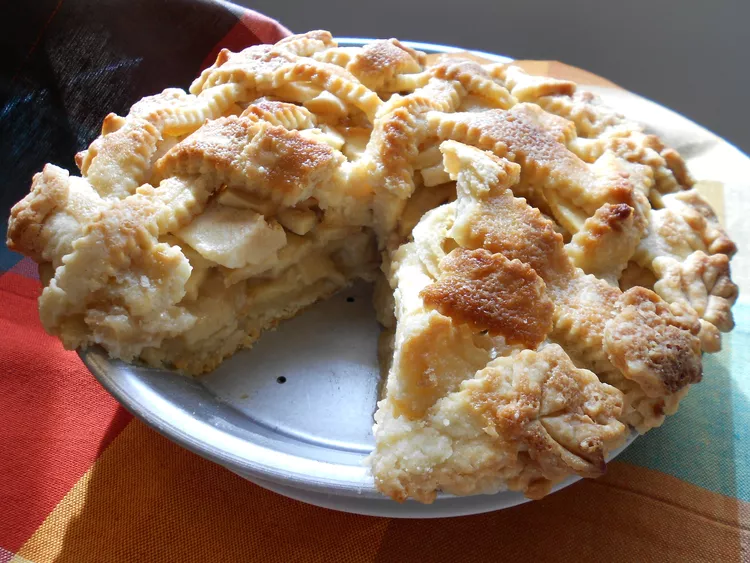

FAMOUS RECIPE
Apple Pie
| Prep Time: 30mins | Cook Time: 1hr | Total: 1hr30mins |
|---|---|---|
| Servings: 8 | Yield: 1(9-inch)pie | |
How to Make Apple Pie
These are the simple ingredients to make this top-rated apple pie recipe:
- Apples: This recipe calls for eight small Granny Smith apples.
- Butter and flour: The filling starts with butter and all-purpose flour cooked into a paste.
- Sugars: A blend of white and brown sugar creates the perfect sweet flavor with a hint of warmth.
- Pie crust: Use a store-bought double crust pie pastry or make your own at home.